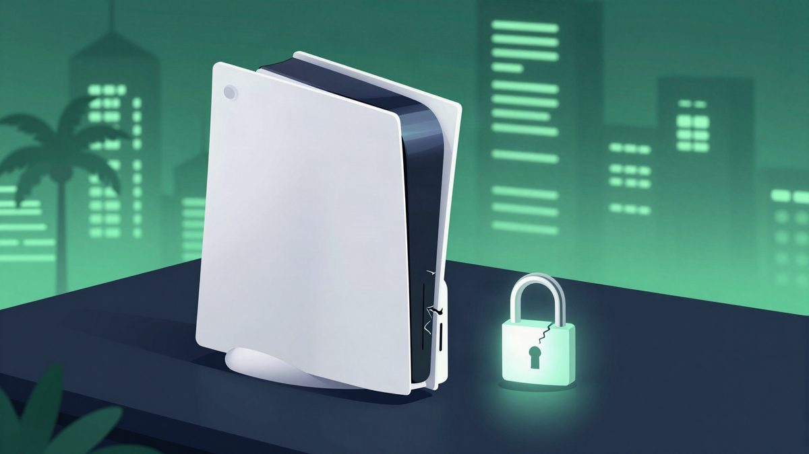

Haker 2tonejordy je dobio 50.000 dolara od Sonyja za PS5 exploit, GTA 6 ostaje bez piratske verzije

Haker 2tonejordy prijavio je Sonyju hypervisor exploit za PS5 preko HackerOne-a i dobio 50.000 dolara. Zbog prijave se GTA 6 prema svemu sudeći neće moći piratizirati na dan izlaska, 19. studenoga.
Haker poznat kao 2tonejordy dobio je 50.000 dolara od Sonyja nakon što je preko bug bounty platforme HackerOne prijavio hypervisor exploit za PlayStation 5. Isplatu je objavio na X-u 14. listopada. Dio PlayStation homebrew zajednice krivi ga da je uništio šanse za piratiziranje igre Grand Theft Auto VI, koja izlazi 19. studenoga.
Hypervisor exploit je ozbiljan problem za svaku konzolu. Hakerima obično omogućuje pristup konzoli na razini hardwarea, a to je preduvjet za jednostavno pokretanje piratiziranih igara. Propust je prijavljen mjesec dana prije izlaska GTA 6, pa ga Sony može zakrpati na vrijeme. Exploit se onda neće moći koristiti za piratiziranje igre.
Jordy je na X-u napisao da za dobivenih 50.000 dolara "barem može kupiti GTA 6". Jedan korisnik mu je odgovorio da je svima oduzeo GTA 6, a onda se pojavio s novcem kojim ga može kupiti. Dio zajednice optužuje ga i da radi u Sonyjevu korist.
Tko je prvi pronašao propust
Jordy kaže da situacija nije tako jednostavna. Hypervisor bug izvorno je pronašao drugi poznati homebrew haker, Andy "theflow0" Nguyen. Jordy tvrdi da je do propusta došao i sam, ali ga je isprva zadržao za sebe. Nguyen ga je zamolio da propust ne prijavljuje, a Jordy je pristao.
U objavi od 16. rujna Jordy tvrdi da je nekoliko sati kasnije netko treći pronašao isti bug uz pomoć AI-ja. Tada je odlučio prijaviti propust Sonyju prije nego što to učini netko drugi, jer Nguyen to, kako kaže, nije namjeravao napraviti. Novac navodno planira iskoristiti za pomoć majci, koja je prema njegovim riječima teško bolesna.
AI i homebrew scena
Kotaku piše da se AI sve češće koristi za reverse-engineering i otvaranje izvornog koda, što je podijelilo homebrew zajednicu. Sony je prestao proizvoditi fizičke medije za PS5, a Kotaku navodi da je to potaknulo scenu da razvija alate. Među njima su i alati koji na PS5 omogućuju emulaciju PS2 i PS3 igara s diskova.
Kotaku zaključuje da bi netko drugi propust vjerojatno prijavio i bez Jordyja, jer su ga uz pomoć AI-ja pronašle barem tri osobe. Da je AI postao ovoliko sposoban za reverse-engineering tek krajem studenoga, a ne krajem rujna, GTA 6 bi vjerojatno izašao prije nego što bi exploit bio prijavljen.
Izvor: Kotaku